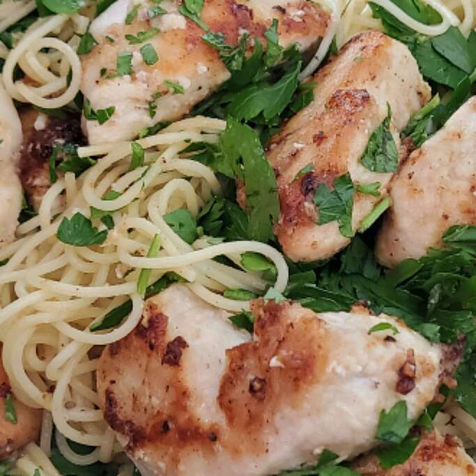

Easy Chicken Piccata

This is my son's favorite dish. He is a very persnickety eater. Serve this chicken recipe over white rice.
Ingredients:-
- 2 large skinless, boneless chicken breasts
- 1 cup all-purpose flour
- ½ stick butter
- ½ cup white wine
- 3 medium lemons, juiced
- 2 tablespoons drained capers
- 2 tablespoons chopped fresh parsley
Steps:-
- Slice chicken breasts horizontally to yield 4 pieces. Place breasts between 2 sheets of plastic wrap and pound to 1/4-inch thin. Place flour on a plate and dredge each breast on both sides in flour.
- Melt butter in a large skillet over medium heat. Put chicken into the skillet and season tops with salt and pepper. Turn when nicely browned, about 4 minutes, and season again. Cook second side until browned, about 4 minutes. Transfer breasts to a plate, reserving skillet drippings.
- Add wine and lemon juice to the skillet, stirring to scrape up any browned bits. Simmer to reduce and thicken sauce, about 5 minutes more. Add capers and pour sauce over chicken breasts on the plate. Sprinkle with parsley.